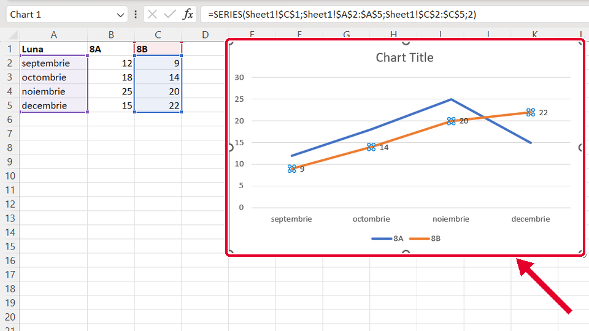
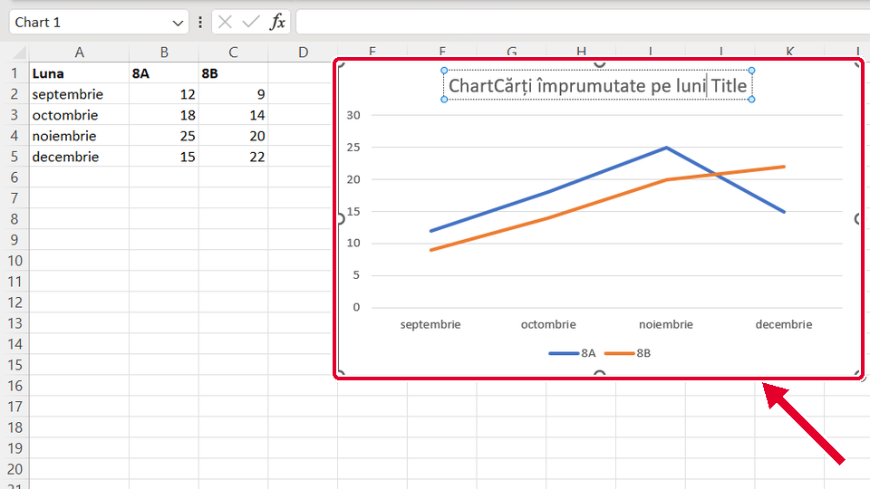
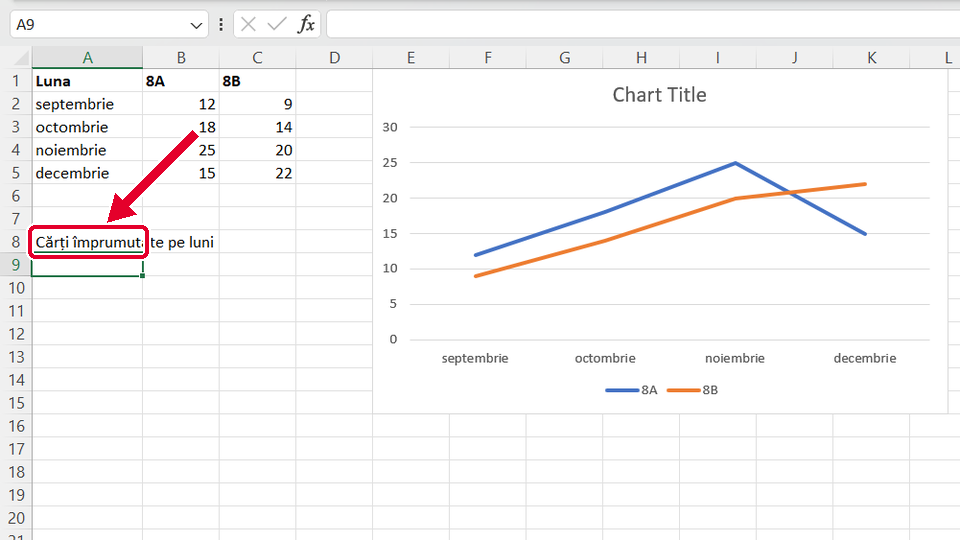

Început
Titlul graficului și etichetele de date
Taste: Spațiu = pauză / continuă · ← și → = pasul anterior / următor · cu Tab ajungi la „Rulează singur”; acolo Spațiu îl pornește sau îl oprește. Poți apăsa și pe film.

Legat de asta
Se deschid într-o filă nouă, ca să nu pierzi filmul de aici.
- ÎnainteGraficul linie din tabel ↗
Faci graficul linie din tabel: fila Inserare (Insert), butonul cu o linie frântă, Linie (Line).
- Același gestSuma cu un singur buton ↗
Tot un clic pe locul în care lucrezi, apoi un buton din panglică: Σ Însumare automată (AutoSum), pe fila Pornire (Home).
Dacă nu-ți iese
Alege ce vezi pe ecran.
Numerele au apărut doar lângă punctele unei singure linii.

De ce: Înainte de Adăugare element de diagramă ai dat clic pe o linie, deci era aleasă doar ea. Etichetele s-au pus doar pe ea.
Ce faci:
- Dai clic pe titlul graficului: acum nu mai e aleasă doar linia.
- Din nou: Proiectare diagramă (Chart Design) › Adăugare element de diagramă (Add Chart Element) › Etichete de date (Data Labels) › Right.
Pe grafic, textul tău a intrat în mijlocul titlului vechi, de exemplu „ChartCărți împrumutate pe luni Title”.

De ce: Ai dat două clicuri pe titlu, iar al doilea a pus cursorul în text. Ce ai scris s-a adăugat la titlul vechi, în loc să-l înlocuiască.
Ce faci:
- Dai clic pe o celulă, ca titlul să nu mai fie ales.
- Dai UN SINGUR clic pe titlu: apare chenarul, fără cursor în text.
- Scrii titlul și apeși Enter: îl înlocuiește pe tot.
Taste: Enter
Titlul nou a apărut într-o celulă, sub tabel, iar pe grafic scrie tot Titlu diagramă (Chart Title).

De ce: Clicul n-a nimerit titlul, ci o celulă. Ce scrii merge în celula aleasă.
Ce faci:
- Apeși Ctrl+Z ca să golești celula.
- Dai un singur clic chiar pe textul Titlu diagramă (Chart Title): în jurul lui apare un chenar.
- Abia apoi scrii titlul și apeși Enter.
Taste: Ctrl+Z · Enter